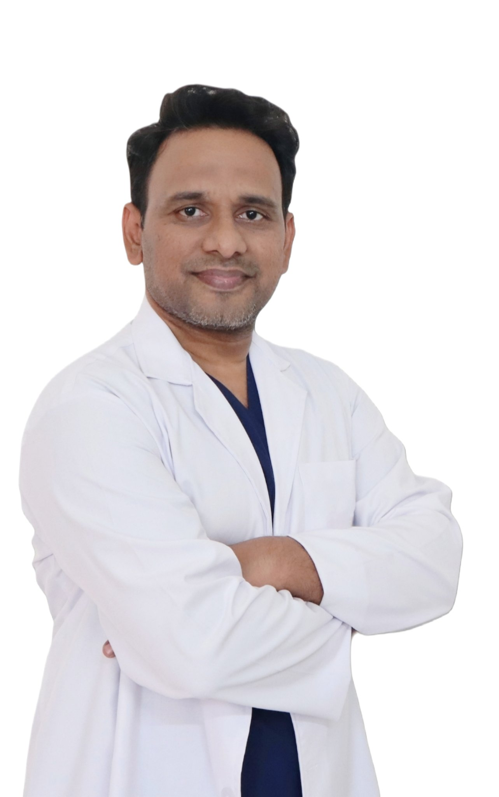

Dr Ashok Reddy
MBBS · DNB (Mumbai) · MCh (Delhi)
Plastic, Cosmetic & Hair Transplant Surgeon
Hand & Microvascular Surgeon
Dr Ashok Reddy consults at AR Plastic Surgery and at Dhruva Foot Health Clinic in Karimnagar, Telangana. His practice covers cosmetic and reconstructive plastic surgery, hair restoration, hand and microvascular surgery, and the surgical care of diabetic foot wounds.

About Dr Ashok Reddy
Dr Ashok Reddy is a plastic surgeon based in Karimnagar. He completed his MBBS, followed by DNB training in Mumbai and the MCh in Plastic Surgery in Delhi.
At AR Plastic Surgery, his work spans cosmetic surgery, hair transplant, reconstructive surgery after injury or disease, and hand and microvascular surgery — including tendon, nerve and artery repair.
At Dhruva Foot Health Clinic, he looks after the surgical side of diabetic foot care: advanced wound care, diabetic foot ulcer treatment, reconstructive surgery for foot wounds and deformities, and scar revision.
A consultation involves an examination, a discussion of the options that are medically suitable, and a clear explanation of the procedure, recovery and follow-up involved, so that the decision is an informed one.
- MBBSBachelor of Medicine, Bachelor of Surgery
- DNBDiplomate of National Board — Mumbai
- MChPlastic Surgery — Delhi
- PracticePlastic, cosmetic & hair transplant surgery
- PracticeHand & microvascular surgery
- PracticeSurgical diabetic foot care
Practice areas
The main areas of Dr Ashok Reddy's practice. Suitability for any procedure is decided after an in-person examination and discussion.
Cosmetic surgery
Procedures for the face, body and breast, planned around proportion and a natural result.
- Rhinoplasty (nose reshaping)
- Gynecomastia surgery (male breast reduction)
- Liposuction and body contouring
- Tummy tuck (abdominoplasty)
- Breast augmentation, reduction and lift
- Face lift and thread lift
Hair restoration
Assessment of hair loss and surgical restoration where it is medically appropriate.
- Hair transplant, including FUE
- Female hair transplant
- Beard and moustache hair transplant
- PRP therapy for hair
- Laser hair removal
Hand & microvascular surgery
Repair and reconstruction of the hand after injury, and treatment of nerve and tendon problems.
- Hand trauma and finger injuries
- Tendon repair and tendon transfer
- Nerve repair, grafting and decompression
- Artery repair and digital replantation
- Carpal tunnel release
- Finger contracture release
Reconstructive & wound surgery
Reconstruction after injury, burns or disease, and surgical care of complex wounds.
- Scar revision and keloid treatment
- Skin grafting and flap reconstruction
- Burn reconstruction and burn scar revision
- Diabetic foot ulcer treatment and reconstruction
- Lipoma and sebaceous cyst removal
- Mole removal and ear lobe repair
How a consultation works
Examination
Dr Ashok Reddy examines the concern, reviews your medical history and any reports you bring, and checks whether a procedure is suitable for you.
Options explained
The suitable options, what each procedure involves, the expected recovery period, and the risks and follow-up care are explained in plain language.
Plan and follow-up
If you decide to go ahead, a treatment plan and dates are fixed. Follow-up visits are scheduled to review healing and progress.
Where Dr Ashok Reddy consults
Two consultation locations in Karimnagar. Please call before visiting to confirm the day's timings.
AR Plastic Surgery
Ratna Nilayam, Jyothinagar, Karimnagar, Telangana 505001
Open Monday to Sunday, 10 AM – 8 PM
Phone: +91 91826 56866
Dhruva Foot Health Clinic
3-6-767, Subashnagar Railway Station Road, Karimnagar, Telangana 505001
Surgical foot care and diabetic foot wound treatment
Phone: +91 99125 10108
Common questions
What does a plastic surgeon do?
Plastic surgery has two broad parts. Reconstructive surgery repairs damage from injury, burns, disease or birth conditions — for example skin grafts, hand repair and wound reconstruction. Cosmetic surgery changes the appearance of a part of the body by choice — for example rhinoplasty, liposuction or gynecomastia surgery. Dr Ashok Reddy practises both, along with hair transplant and hand and microvascular surgery.
Do I need a consultation before any procedure?
Yes. Every procedure starts with an in-person consultation and examination. Some concerns can be managed without surgery, and some procedures are not suitable for some patients. The consultation is where this is worked out, and where the procedure, recovery and costs can be discussed openly.
What should I bring to the first consultation?
Bring any previous medical reports, scans or prescriptions related to the concern, and a list of medicines you currently take. If you have diabetes, high blood pressure or other long-term conditions, mention them — they affect planning for surgery and healing.
A hand injury has cut a finger and it is bleeding or not moving. What should I do?
Apply firm pressure with a clean cloth and keep the hand raised. Do not delay seeking care: tendon, nerve and artery injuries in the hand are time-sensitive, and early repair improves the chance of recovering movement and feeling. Go to the nearest emergency service, or call the clinic on +91 91826 56866.
Does Dr Ashok Reddy treat diabetic foot wounds?
Yes, at Dhruva Foot Health Clinic in Karimnagar, where he covers the surgical side of diabetic foot care: advanced wound care, diabetic foot ulcer treatment, reconstructive surgery for foot wounds and deformities, and scar revision. A foot wound in a person with diabetes should be examined promptly and should not be watched at home for long.
Consult Dr Ashok Reddy
AR Plastic Surgery, Karimnagar — open Monday to Sunday, 10 AM to 8 PM.